| 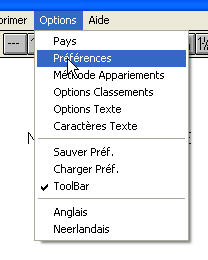 | 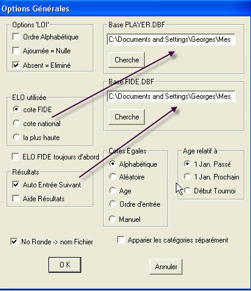 |
| 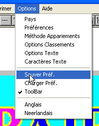 |
| 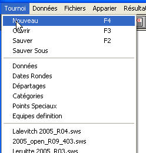 | 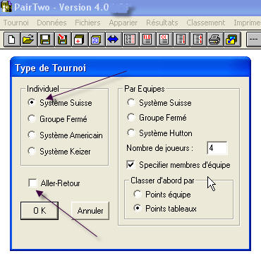 |
| 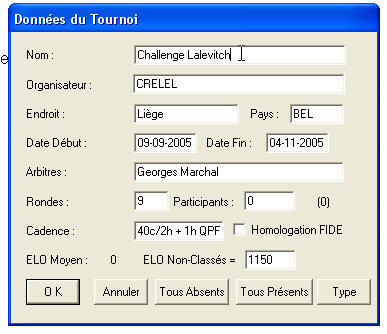 | |
| Le programme calcul automatiquement les dates des rondes en divisant le nombre de jours entre les dates de fin et de début et en calculant un interval pour chacune des rondes. Il faut donc impérativement aller dans le menu 'Tournoi, Date des rondes' afin de vérifier que les dates sont bien enregistrées. Eventuellement, il faut les corriger. | 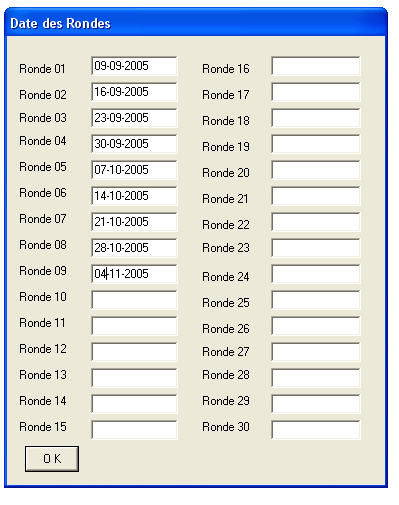 |
| Il faut maintenant définir les options de départage du tournoi. Mettre le curseur sur le premier départage, puis dans la liste, choisir celui que l'on désire. Procéder de la même manière avec les départages suivants. | 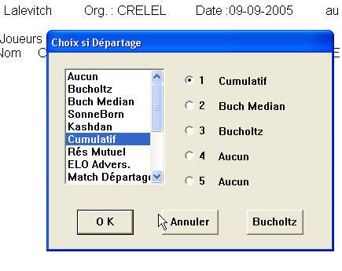 |
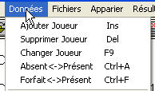 Maintenant, nous entrons de nouveaux joueurs, en utilisant le menu ou plus simplement avec la touche 'INS (insert). Les joueurs peuvent être entrés de 3 manières différentes. La première est de donner manuellement tous les renseignements, sans donner de numéro de matricule. On procèdera de la sorte lorsqu'un nouveau joueur s'inscrit au tournoi, ou lorsque le joueur ne fait pas partie de la FRFE ou n'est pas connu dans le fichier FIDE. Après entrée des informations, taper sur 'OK'. La deuxième manière est de donner le matricule de la FRBE et de taper 'TAB' pour obtenir les informations en provenance du fichier 'PLAYER.DBF' et de vérifier ainsi si les renseignements sont exacts. Si le joueur à une cote FIDE, le fichier est également lu et les informations sont insérées dans la boite de dialogue.
| 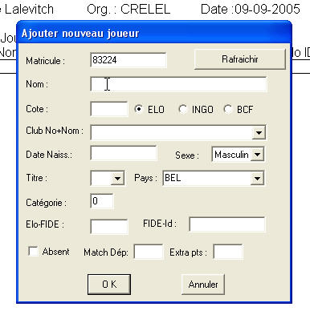 | après 'TAB' 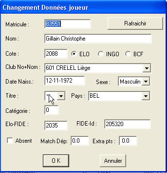 |
| '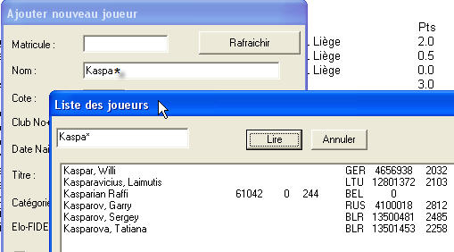 |
Les champs divers |
|||||||||||||||||||||||||
|---|---|---|---|---|---|---|---|---|---|---|---|---|---|---|---|---|---|---|---|---|---|---|---|---|---|
| Matricule | le matricule FRBE du joueur | ||||||||||||||||||||||||
| Rafraichir | après modifications de la fiche, si l'on veut récupérer les données de PLAYER.DBF et/ou FIDE.DBF | ||||||||||||||||||||||||
| Nom | le nom et prénom. | ||||||||||||||||||||||||
| Cote | la cote ELO, ou INGO ou BCF | ||||||||||||||||||||||||
| Club NO+Nom | le numéro du Club. Les numéros se trouvent dans le fichier clubs.txt se trouvant dans le même répertoire que P2.exe | ||||||||||||||||||||||||
| Date de Naissance | |||||||||||||||||||||||||
| Sexe | Masculin/Féminin | ||||||||||||||||||||||||
| Titre | le titre officiel du joueur. PairTwo reconnait les titres suivant:
|
||||||||||||||||||||||||
| Pays | pays d'origine, se trouve dans le fichier 'Country.txt' installé dans le même répertoire que P2.exe. | ||||||||||||||||||||||||
| Catégorie | La catégorie du joueur, pour par exemple déterminer les catégories de prix, ou la 'Pool' dans le cas d'un tournoi fermé. | ||||||||||||||||||||||||
| Elo-Fide | l'ELO FIDE du joueur s'il en possède une. | ||||||||||||||||||||||||
| Fide-Id | le matricule FIDE du joueur. | ||||||||||||||||||||||||
| Absent | A l'inscription du joueur, le marquer absent< pour la première ronde. | ||||||||||||||||||||||||
| Match de départage | inscrire le résultat d'un match de départage. | ||||||||||||||||||||||||
| Extra points | Ce champs permet d'ajouter ou de soustraire fictivement des points au joueur pour modifier l'appariement, et le classement. Cela peut servir à faire un appariement en système accéléré, ou encore en cas de forfait technique (cas de force majeure pour les 2 joueurs) on leur met par example 1/2-1/2 mais on peur retrancher ces points pour l'appariement en mettant -0.5 dans l'extra-points. Ce champs peut aussi être utilisé en fin de tournoi, pour le classement, afin d' infliger une pénalité au joueur en lui rettranchant une partie de ses points. | ||||||||||||||||||||||||
PairTwo affiche maintenant la liste des joueurs.
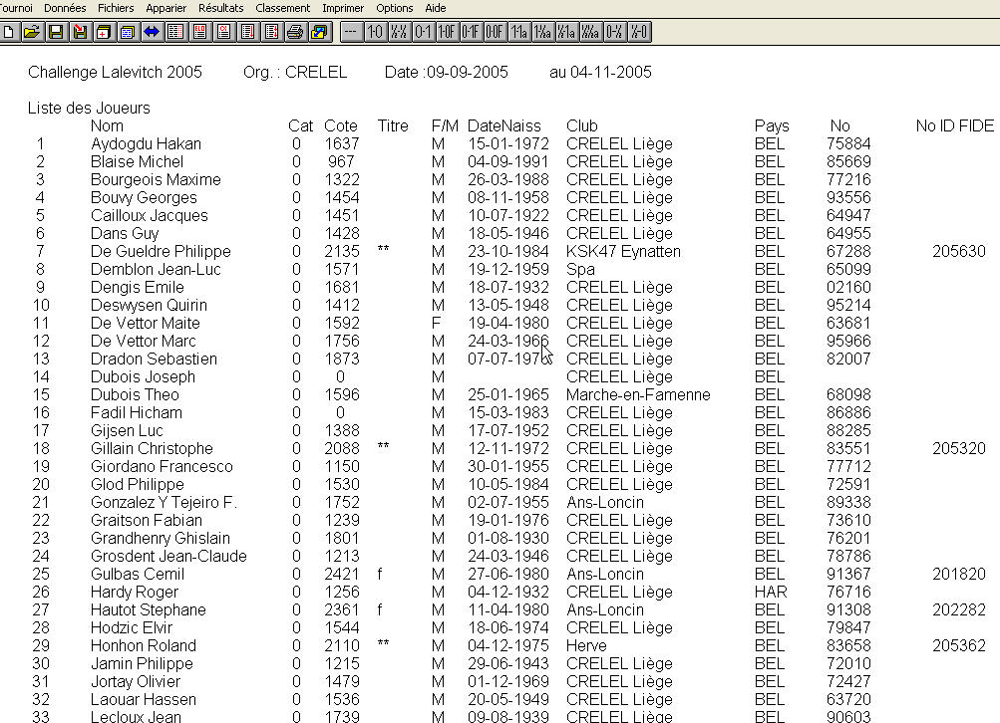
| 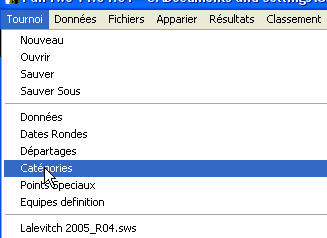 | Nous pouvons maintenant modifier certaines options sur les joueurs (comme définir des catégories). |
| 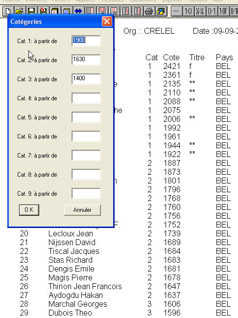 | Définition des catégories: il faut simplement entrer la cote ELO à partir de laquelle la catégorie s'applique. Automatiquement, le programme attribue la catégorie aux joueurs. Si l'on modifie les catégories, la modification se répercute automatiquement sur les joueurs. On peut toujours modifier manuellemnt la catégorie d'un joueur. Mais si l'on recommence la définition des catégories comme précédemment, la catégorie attribuée manuellement est perdue. Les catégories peuvent servir à l'attribution de prix par catégorie ELO, ou désigner les 'Pools' dans le cas de tournois germés. |
| 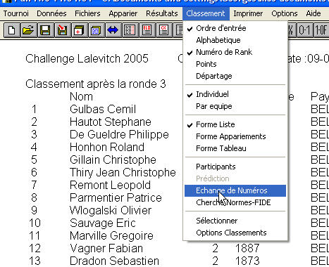 | Certains paramètres du tournoi peuvent aussi être changés dans les préférences. ATTENTION !!! Il faut maintenant lister les joueurs classés par ELO et aller dans le menu 'Classement' pour cocher 'Rank' afin de lister les joueurs dans la 'ranking liste'. Si certains joueurs ne sont pas bien classés en ordre de 'Ranking', on peut modifier cette 'Ranking Liste' dans le menu 'Classement/Echange de Numéros' |
| 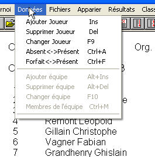 | |
| 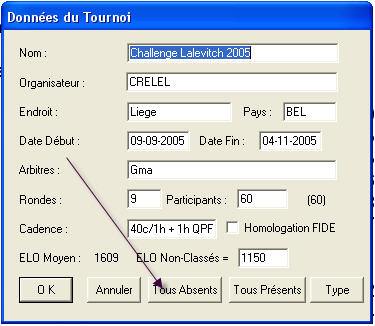 | A partir du menu 'Données', vous pouvez "Ajouter" un joueur (touche INS), "Supprimer" un joueur (touche DEL, "Changer" un joueur (touche F9 ou 'double click' sur le joueur), changé le statut d'un joueur de "Présent" en "Absent" (touche Ctrl A) ou Forfait (touche Ctrl F) et vice-versa. Un joueur absent ou forfait ne sera pas apparié pour la prochaine ronde. Si n"cessaire, après la ronde, il faut remettre ce joueur Présent. Si plusieurs joueurs sont Absent il y a moyen de les remettre tous Présent en utilisant le menu Tournoi/Données, mettre tous les joueurs Présent. Cette fonction changera le statut des joueurs de ABSENTS en PRESENTS, mais les joueurs Forfaits resteront Forfaits. Cette fonction est très utile pour les tournois Américains pour lesquels seuls les joueurs présents en début de la ronde sont appariés. Il faut alors mettre tous les joueurs 'ABSENTS' et ensuite, manuellement en utilisant les touches Ctrl A les mettre présents au fur et à mesure qu'ils se présentent. |
| 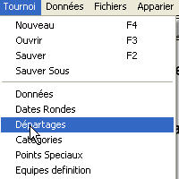 | Dans les tournois, en cas d'égalité, il faut départager les joueurs. Cela se fait dans le menu 'Tournoi, Départages'. | |
| 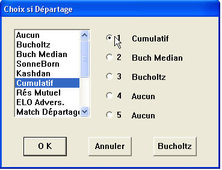 | Il faut d'abord cliquer sur le numéro 1, et ensuite choisir le type de départage
(tableau 1: Cumulatif). Ensuite choisir le numéro 2 puis le type de départage,
et ainsi de suite jusqu'à 5 départages au maximum.
|
|
| 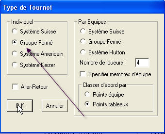 | Pour générer un tournoi fermé il suffit de bien cocher la case (voir image) et surtout d'indiquer
le nombre de rondes du tournoi. Ensuite on vérifie les dates (comme dans le tournoi système Swiss),
on attribue des valeurs au départage (normalement SonneBorn-Berger) et ensuite on encode les joueurs.
Ici, il y a 2 façons de procéder. La première est de faire un tournoi fermé par série de x joueurs (10 joueurs par exemple) et l'on aura
donc autant de fichiers que de 'Pools'. C'est l'ancienne manière. |
| 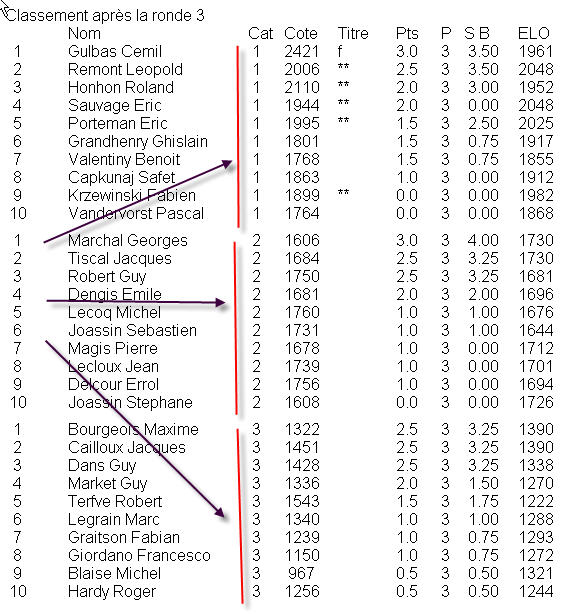 | Une manière plus simple est d'encoder tous les joueurs dans le même tournoi, mais en veillant bien au fait que le nombre de joueurs soit un multiple du nombre de rondes + 1. Si l'on a indiqué 9 rondes, il y aura OBLIGATOIREMENT un multiple
de 10 joueurs, sinon vous allez avoir des problèmes (j'essayerai de corriger ce problème dans une future version). Il faut alors
attribuer la catégorie '1' au premier groupe de 10 joueurs, la catégorie '2' aux 10 suivants et ainsi de suite pour tous les joueurs.
Il faut alors aller dans le menu 'Options,Préférences' pour cocher la case 'Apparier les catégories séparément'.
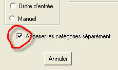 |
| 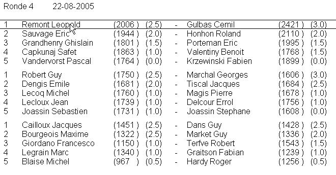 | Lorsque l'on fait l'appariement, les joueurs sont appariés chacun dans leur catégorie et un interligne est créé afin de séparer les pools. |
| 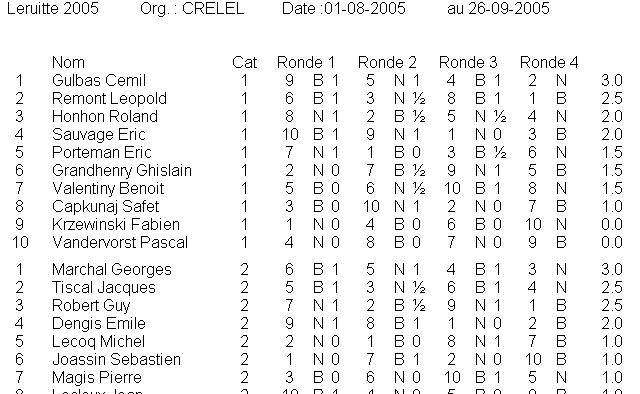 | On peut obtenir un classement normal par points, comme sur le graphique précédent, ou un classement sous forme d'appariement en allant dans le menu adéquat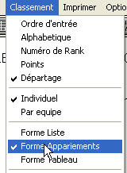 |
| 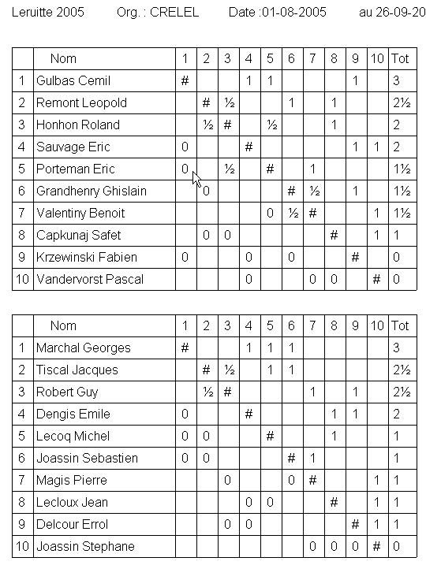 | 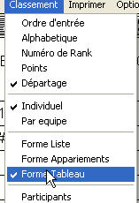...ou encore sous forme de tableaux pour chacune des pools. |
| 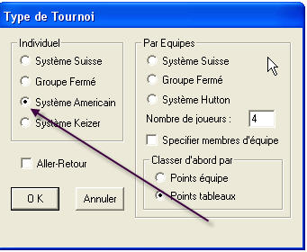 | Pour préparer un tournoi au système Américain, il suffit de cocher l'option correspondante. Ce type de tournoi peut aussi se joueur en mode Aller-Retour Pour se faire, cocher la case adéquate. Faire attention dans la description du tournoi de mettre le nombre de rondes sans tenir compte de l'option Aller-Retour, en effet, le programme DOUBLERA automatiquement ce nombre de rondes. Les appariements impairs se feront normalement, et les appariements pairs seront la copie de l'appariement précédent mais avec les couleurs inversées. Aussi un joueur qui est Bye se verra attribué 2 points, car il sera Bye durant deux rondes consécutives. |
| 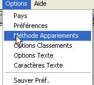 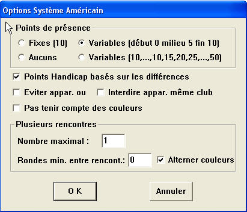 |
Dans le système américain, vous pouvez spécifier si le tournoi aura lieu avec des points de présence ou non.
Les points de présence sont donnés à chacune des rondes aux joueurs présents (comme son nom l'indique), que le joueur
soit apparié ou pas. Vous pouvez choisir entre :
|
| 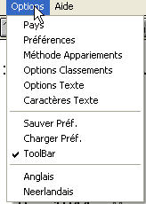 | Ici, vous gérez toutes les options du tournoi, des joueurs, des classements ou des appariements. Les options en bas de liste, sont le choix de la langue, Français, Anglais ou Néérlandais. La précédente vous permet d'afficher la 'ToolBar' (barre d'outils) ou non. Juste au dessus, vous pouvez charger ou sauver les préférences. 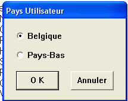L'option 'Pays' vous permet de choisir le pays organisateur, soit la Belgique ou les Pays-Bas. Cette option permet de générer des rapports dans le format adéquat à chacun des pays, car certains de nos arbitres internationaux vont arbitrer dans notre pays voisin, et cette option leur facilite grandement la tâche. Passons maintenant aux choses sérieuses avec de plus grosses options. |
| 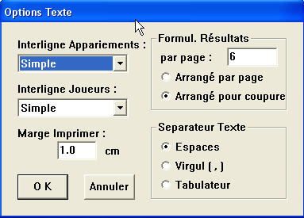 | Options TextePermet de choisir le type d'interligne aussi bien pour les appariements que pour la liste des joueurs (ou classement). Le choix est de Simple par défaut mais peut être aussi 1,5 Lignes ou Double. On peut choisir le nombre de formulaires de résultats à imprimer sur une page, arrangés ces formulaires par page pour les arranger pour une coupure facile avec une rogneuse.Séparateur Texte: si l'on veut sortir des listes sur fichiers, puis les traiter avec un traitement de texte, ou les imprimer, il vaut mieux cocher Espaces: Si par contre on veux récupérer les fichiers dans un tableur (Excel pour ne pas le nommer) alors il faut cocher le séparateur Virgule pour un format .cvs ou cocher tabulateur pour d'autres applications. |
| 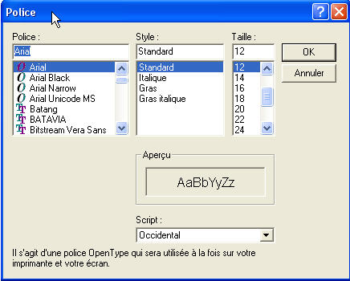 | Caractères TextePermet de choisir la police de caractères, ainsi que la taille. Suivant la grandeur de votre écran, il est de bon usage de changer la taille des caractères pour une meilleure lecture. Cette option affecte aussi les caractères des impressions. Pour les appariements, il est conseillé de configurer l'imprimante en mode 'paysage' et de choisir ici des caractères un peu plus grand (14 par exemple) pour obtenir un affichage correct. |
| 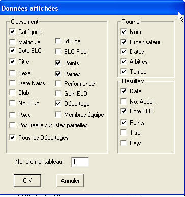 | Options ClassementDeux manières d'obtenir ce menu:
Vous choisissez les données que vous voulez voire apparaître sur le tournoi, le classement ou sur les résultats. En général, on coche toutes les données du tournoi. Les options principales des résultats sont Date, Cote Elo et Points. S'il y a des joueurs ayant un titre, il est bon de le faire figurer sur la page de résultats. La page de classement est plus fournie, car elle permet de choisir toutes les données du joueur, ainsi que les points (cela semble évident), les départages, les gains ELO, ... A vous de jongler avec ces paramètres. |
| 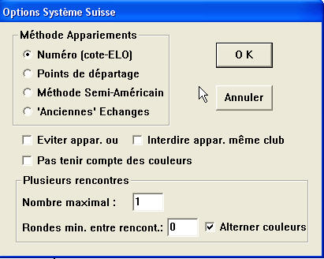 | Méthode "Appariements"En principe, la configuration proposée par défault est bonne. Vérifier que la case Alterner les couleurs soit cochée. Eviter les appariements de joueurs du même club ne parait pas opportun pour les tournois d'un club. |
| 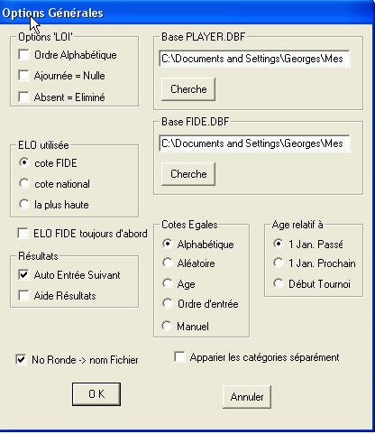 |
PréférencesBase Player.DBF: permet d'indiquer le chemin où se trouve le fichier des joueurs belges. C'est la première option à compléter lors d'une première utilisation de PairTwo. Base FIDE.DBF: Ici, c'est le chemin du fichier international de la FIDE qui doit être indiqué. Options LOI: laissé l'ordre alphabétique, surtout ne pas cocher 'Départage par défaut' qui donne un départage 'bizarre' dans PairTwo. Cette option sera revue dans une prochaine version. ELO Utilisé: coché le type d'ELO utilisé. Si 'plus haute' est cochée, lors de l'appariement, la cote ELO sera suivie d'une lettre 'N' si la cote utilisée est nationale, ou 'F' si c'est la cote FIDE qui a été utilisée. Age relatif: pour les tournois jeunes, calcul l'age relatif par rapport à la date case cochée. Cotes Egales: à départage égal, l'appariement est fait de la manière cochée. No Ronde -> nom Fichier: ajoute _Rxx au nom de fichier. où 'xx' est le numéro de la ronde. Cette option est vivement recommandée. Apparier les catégories séparément: surtout pour les tournois fermés ou les catégories d'âges. |
| 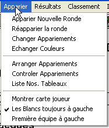 | L'appariement se fait dans le menu Apparier. Vous pouvez donc:
|
| 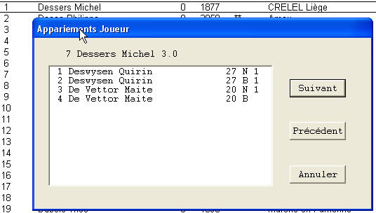 | La fiche du joueur peut-être consultée en cliquant avec le bouton gauche de la souris. On peut faire défiler les cartes d'appariements avec les boutons Suivant et Précédent. |
| 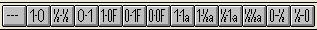 | 1. La barre d'outils qui propose dans l'ordre Suppression résultat ensuite 3 résultats normaux suivis de 3 résultats par forfait, 3 résultats d'ajournement et 2 résultats spéciaux (GSM avec matériel insuggisant pour mater) . |
| 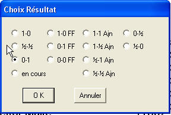 | 2. 'Double Click' sur la ligne des joueurs, et cocher la bonne option. |
|
3. Utiliser les touches chiffres (pas le clavier numérique, mais bien les chiffres au dessus du clavier) |
| ||
|---|---|---|
| 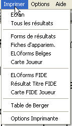 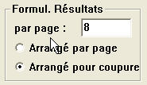 |
Ecran | impression de l'écran en cours. |
| Tous les Résultats | impression de tous les résultats des rondes. | |
| Forms de résultats | impression de fiches pour inscrire les résultats de la ronde en cours. Les fiches reprennent le numéro de ronde, le numéro de table, le nom des deux joueurs, une ligne pour inscrire le résultat, une ligne pour la signature, et une ligne pour indiquer les absences. Ces feuilles peuvent alors être découpées et distribuées aux tables. Le nombre de formulaires est paramétrable dans l' option Texte. Voir figure 2 à gauche. Les fiches peuvent être imprimées par ordre de table si l'option Arrangé par page est cochée sinon les fiches sont arrangées avec la table 1 en haut de la page 1, la table 2 en haut de la page 2, ... | |
| Fiches d'appariement | impression des fiches d'appariements de tous les joueurs. | |
| ELO forms Belges | imprime une liste des joueurs sous forme de tableau, reprenant dans l'ordre, le numéro des joueurs contre lesquels on a gagné, ceux contre lesquels on a fait NULLE et ceux contre lesquels on a perdu. La liste est triée par points. | |
| Carte Joueur | imprime la carte d'appariement du joueur. La fiche peut aussi être consultée en cliquant avec le bouton gauche de la souris (voir sous appariement | |
| ELO forms FIDE | imprime les feuilles de résultats destinés à la FIDE. Cette feuille est obsolète | |
| Résultat Titre FIDE | imprime les résultats d'un tournoi à norme afin de déterminer si le joueur a réussit une norme. obsolète | |
| Carte FIDE Joueur | imprime la carte FIDE du joueur. obsolète | |
| Table de Berger | imprime la table de Berger du tournoi avec les dates appropriées. | |
| Options Imprimante | boîte de dialogue de Windows. Permet de choisir son imprimante et la position du papier (paysage ou portrait) | |
| F1 | Aide |
| Ctrl-S | Sauver le tournoi |
| Ctrl-O | Ouvrir un tournoi |
| Ctrl-N | Nouveau tournoi |
| Alt-F4 | Exit |
| F5 | Ronde précédente |
| F6 | Ronde suivante |
| F7 | Ronde actuelle |
| F9 | Modification joueur |
| F10 | Modification équipe |
| Ins | Ajouter joueur |
| Alt-Ins | Ajouter équipe |
| Del | Suppression joueur |
| Alt-Del | Suppression équipe |
| Ctrl-A | Absent <-->Présent |
| Ctrl-F | Forfait <--> Présent |
| Ctrl-Shft-A | Tous Absent |
| Ctrl-Shft-P | Tous Présent |
| Ctrl-M | Membres de l'équipe |